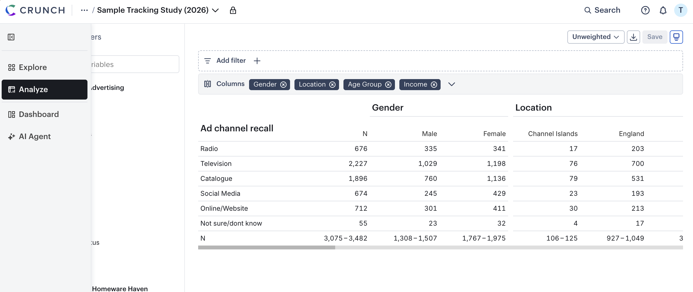

Oct 15, 2026
Analyze Mode will be available to all early access users starting Wednesday, October 21st.
Analyze Mode brings Tables & Graphs and Multitables functionality together in a single, unified workspace. Instead of switching between separate tabs, you’ll find everything you need to build your analysis in one place.
Until now, analysis in Crunch was split across two modes: Tables & Graphs for building bivariate tables and charts, and Multitables for building multivariate tables and tab books.
The new Analyze Mode combines both into one streamlined workflow.
We are also introducing a new way to navigate between Explore Mode, Analyze Mode, Dashboards, and the AI Agent via a toolbar:

One workspace: Build tables, create charts, and work with multitables, all from the same place.
Less switching, more analyzing: Spend your time on the data, not on navigating between modes.
Easier to find what you need: Whether you’re new to Crunch or a seasoned user, the tools you need are quicker to find.
Nothing you rely on is going away. Your saved analyses and core Crunch functionality remain exactly where you need them. Analyze Mode just rethinks the analysis experience. Whether you’re building a single table or a deck or dashboard for stakeholders, Analyze Mode gives your analyses’ a single home.
What is Analyze Mode?
Is any functionality being removed?
Will my existing saved analyses still work?